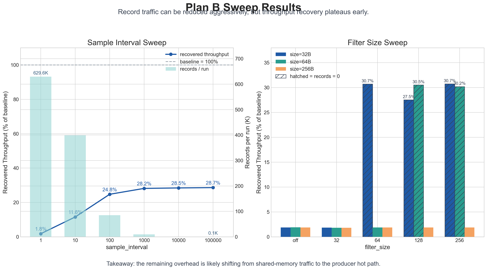
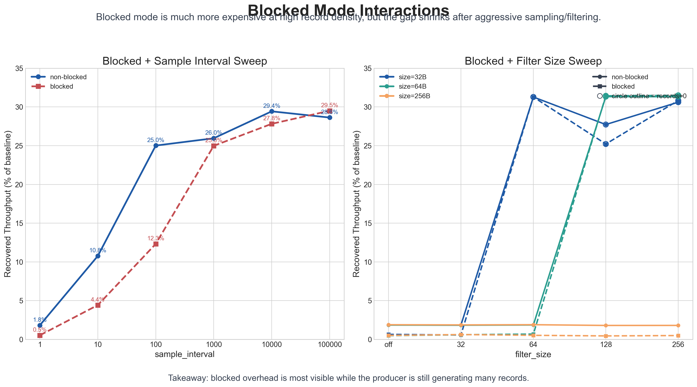

Current motivation
Real OpenHarmony native_hook is not fully runnable in the current server environment, especially when the experiment needs the real hook entry, tighter dependency closure, and device-side runtime conditions.
native_hook / Plan B
This page summarizes why Plan B was built, what parts of the native_hook-style pipeline are already runnable on the server, what differs from the real OpenHarmony native_hook, and what the latest sweep results suggest about the remaining overhead.
Why this page exists
Real OpenHarmony native_hook is not fully runnable in the current server environment, especially when the experiment needs the real hook entry, tighter dependency closure, and device-side runtime conditions.
The goal is not to fake performance numbers. The goal is to preserve the performance-relevant middle path: producer behavior, control-plane handshake, shared-memory transport, flush logic, and backend drain.
Pipeline
This is the Linux-side Plan B chain already running on the server. It is not the full real native_hook, but it is enough to run parameter sweeps and study where overhead is still concentrated.
LD_PRELOAD intercepts malloc, free, calloc, and realloc.
Guard logic, metadata capture, sample / filter decision, and record build.
Unix socket handshake, PID exchange, config delivery, and FD passing.
Shared-memory ring buffer plus eventfd notification and flush batching.
Batch drain, statistics, CSV logging, and result analysis.
Default threshold aligned to 20, matching the upstream-style batching idea.
Socket is mainly for setup; shared memory carries high-frequency records.
Keep producer-side work light enough that later experiments can isolate the true bottleneck layer.
Reality check
This week
Consumer, producer, Unix socket, FD passing, shared memory, and eventfd path all run end to end on server.
sample_interval and filter_size were turned from placeholder fields into actual producer-side behavior.
blocked=0/1 is now a measurable branch, so Plan B can compare batch-friendly and more synchronous paths directly.
Current status
Results
The main takeaway is not just that sample and filter reduce record traffic. The more important takeaway is that throughput recovery plateaus early, which suggests the remaining major cost has already moved closer to the producer hot path.
Increasing sample_interval or raising filter_size
can drastically reduce records. But after a certain point, throughput stops
improving proportionally, which suggests the remaining cost is not only in
downstream transport or backend drain.

When record density is still high, blocked=1 is much heavier
than blocked=0. As sample/filter suppress record traffic more
aggressively, the two curves converge, which supports the idea that the
major blocked penalty belongs to the hot record-heavy stage.

blocked=0, sample=100000 reached about 4.81M ops with batch behavior near 20.
blocked=1, sample=1 dropped to about 88K ops with avg_batch=1.
Current evidence points more strongly to producer-side hot-path cost than to shared-memory transport alone.
Next step
Artifacts
linux_native_hook_v1 source treeVisitors can now use the static landing page for a quick overview, then directly inspect the runnable Plan B code, plotting scripts, and experiment notes inside the same repository.